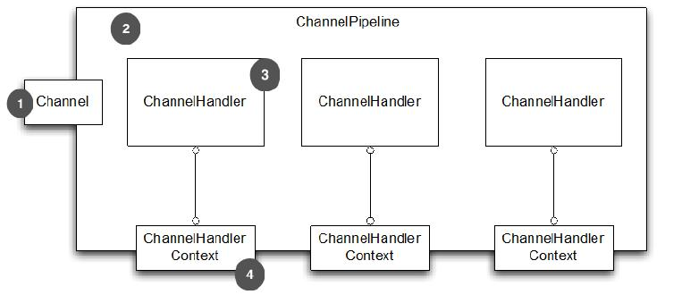

ChannelHandler
Table of Contents
本章主要内容：
- Channel
- ChannelHandler
- ChannePipeline
- ChannelHandlerContext
在本章我们将探讨这些容器如何通过应用程序来移动，传入和传出，以及他们的内容是如何处理的
Netty 提供了应用开发的数据处理方面的强大支持。已经看到了channelhandler 如何链接在一起 ChannelPipeline 使用结构处理更加灵活和模块化
在这一章中，下面会遇到各种各样 Channelhandler，ChannelPipeline 的使用案例，以及重要的相关的类Channelhandlercontext 。也将展示如何将这些基本组成的框架写出干净可重用的处理实现
ChannelHandler 家族
在深入研究 Channelhandler 内部之前，先花几分钟了解下这个领域的 Netty 组件模型的基础。这里提供一个 Channelhandler 及其子类的研究有价值的背景
Channel 生命周期
Channel 有个简单但强大的状态模型，与 ChannelInboundHandler API 密切相关。下面表格是 Channel 的四个状态：
| 状态 | 描述 |
| channelUnregistered | channel创建但未注册到一个 EventLoop |
| channelRegistered | channel 注册到一个 EventLoop |
| channelActive | channel 的活动的 (连接到了它的 remote peer)，现在可以接收和发送数据了 |
| channelInactive | channel 没有连接到 remote peer |
Channel 的正常的生命周期如下图，当这些状态变化出现，对应的事件将会生成，这样与 ChannelPipeline 中的 ChannelHandler 的交互就能及时响应：

ChannelHandler 生命周期
ChannelHandler 定义的生命周期操作如下表：
| 方法 | 描述 |
| handlerAdded | 当 ChannelHandler 添加到 ChannelPipeline 调用 |
| handlerRemoved | 当 ChannelHandler 从 ChannelPipeline 移除时调用 |
| exceptionCaught | 当 ChannelPipeline 执行发生错误时调用 |
当 ChannelHandler 添加到 ChannelPipeline，或者从 ChannelPipeline 移除后，这些将会调用。每个方法都会带 ChannelHandlerContext 参数
ChannelHandler 子接口
Netty 提供2个重要的 ChannelHandler 子接口：
- ChannelInboundHandler: 处理进站数据，并且所有状态都更改
- ChannelOutboundHandler: 处理出站数据，允许拦截各种操作
ChannelHandler 适配器
Netty 提供了一个简单的 ChannelHandler 框架实现，给所有声明方法签名。这个类 ChannelHandlerAdapter 的方法，主要推送事件 到 pipeline 下个 ChannelHandler 直到 pipeline 的结束。这个类 也作为 ChannelInboundHandlerAdapter 和ChannelOutboundHandlerAdapter 的基础。所有三个适配器类的目的是作为自己的实现的起点。您可以扩展它们，覆盖你需要自定义的方法
ChannelInboundHandler
ChannelInboundHandler 的生命周期方法在下表中，当接收到数据或者与之关联的 Channel 状态改变时调用。之前已经注意到了，这些方法与 Channel 的生命周期接近：
| 方法 | 描述 |
| channelRegistered | Invoked when a Channel is registered to its EventLoop and is able to handle I/O |
| channelUnregistered | Invoked when a Channel is deregistered from its EventLoop and cannot handle any I/O |
| channelActive | Invoked when a Channel is active; the Channel is connected/bound and ready |
| channelInactive | Invoked when a Channel leaves active state and is no longer connected to its remote peer |
| channelReadComplete | Invoked when a read operation on the Channel has completed |
| channelRead | Invoked if data are read from the Channel |
| channelWritabilityChanged | Invoked when the writability state of the Channel changes. The user can ensure writes are not done too fast (with risk of an OutOfMemoryError) or can resume writes when the Channel becomes writable again.Channel.isWritable() can be used to detect the actual writability of the channel. The threshold for writability can be set via Channel.config().setWriteHighWaterMark() and Channel.config().setWriteLowWaterMark() |
| userEventTriggered(…) | Invoked when a user calls Channel.fireUserEventTriggered(…) to pass a pojo through the ChannelPipeline. This can be used to pass user specific events through the ChannelPipeline and so allow handling those events |
ChannelInboundHandler 实现覆盖了 channelRead() 方法处理进来的数据用来响应释放资源 Netty 在 ByteBuf 上使用了资源池，所以当执行释放资源时可以减少内存的消耗
实例
@ChannelHandler.Sharable public class DiscardHandler extends ChannelInboundHandlerAdapter { //1 扩展 ChannelInboundHandlerAdapter @Override public void channelRead(ChannelHandlerContext ctx, Object msg) { ReferenceCountUtil.release(msg); //2 .ReferenceCountUtil.release() 来丢弃收到的信息 } }
Netty 用一个 WARN-level 日志条目记录未释放的资源，使其能相当简单地找到代码中的违规实例。然而，由于手工管理资源会很繁琐，您可以通过使用 SimpleChannelInboundHandler 简化问题。如下：
@ChannelHandler.Sharable public class SimpleDiscardHandler extends SimpleChannelInboundHandler<Object> { //1 扩展 SimpleChannelInboundHandler @Override public void channelRead0(ChannelHandlerContext ctx, Object msg) { // No need to do anything special //2 不需做特别的释放资源的动作 } }
SimpleChannelInboundHandler 会自动释放资源，而无需存储任何信息的引用
ChannelOutboundHandler
ChannelOutboundHandler 提供了出站操作时调用的方法。这些方法会被 Channel, ChannelPipeline, 和 ChannelHandlerContext 调用
ChannelOutboundHandler 另个一个强大的方面是它具有 在请求时延迟操作或者事件的能力 。比如，当你在写数据到 remote peer 的过程中被意外暂停，你可以延迟执行刷新操作，然后在迟些时候继续
下面显示了 ChannelOutboundHandler 的方法：
| 方法 | 描述 |
| bind | Invoked on request to bind the Channel to a local address |
| connect | Invoked on request to connect the Channel to the remote peer |
| disconnect | Invoked on request to disconnect the Channel from the remote peer |
| close | Invoked on request to close the Channel |
| deregister | Invoked on request to deregister the Channel from its EventLoop |
| read | Invoked on request to read more data from the Channel |
| flush | Invoked on request to flush queued data to the remote peer through the Channel |
| write | Invoked on request to write data through the Channel to the remote peer |
几乎所有的方法都将 ChannelPromise 作为参数，一旦请求结束要通过 ChannelPipeline 转发的时候，必须通知此参数
ChannelPromise vs. ChannelFuture
ChannelPromise 是 特殊的 ChannelFuture，允许你的 ChannelPromise 及其操作成功或失败
所以任何时候调用例如 Channel.write() ，一个新的 ChannelPromise将会创建并且通过 ChannelPipeline传递。这次写操作本身将会返回 ChannelFuture， 这样只允许你得到一次操作完成的通知
Netty 本身使用 ChannelPromise 作为返回的 ChannelFuture 的通知，事实上在大多数时候就是 ChannelPromise 自身（ChannelPromise 扩展了 ChannelFuture）
ChannelOutboundHandlerAdapter
ChannelOutboundHandlerAdapter 提供了一个实现了 ChannelOutboundHandler 所有基本方法的实现的框架。 这些简单事件转发到下一个 ChannelOutboundHandler 管道通过调用 ChannelHandlerContext 相关的等效方法。你可以根据需要自己实现想要的方法
资源管理
当你通过 ChannelInboundHandler.channelRead(…) 或者 ChannelOutboundHandler.write(…) 来处理数据，重要的是 在处理资源时要确保资源不要泄漏
Netty 使用引用计数器来处理池化的 ByteBuf。所以当 ByteBuf 完全处理后，要 确保引用计数器被调整
引用计数的权衡之一是用户时必须小心使用消息。当 JVM 仍在 GC这个消息，以至于可能是之前获得的这个消息不会被放回池中。因此很可能，如果你不小心释放这些消息，很可能会耗尽资源
为了让用户更加简单的找到遗漏的释放，Netty 包含了一个 ResourceLeakDetector ，将会从已分配的缓冲区 1% 作为样品来检查是否存在在应用程序泄漏。因为 1% 的抽样，开销很小
对于检测泄漏，您将看到类似于下面的日志消息：
LEAK: ByteBuf.release() was not called before it’s garbage-collected. Enable advanced leak reporting to find out where the leak occurred. To enable advanced leak reporting, specify the JVM option ’-Dio.netty.leakDetectionLevel=advanced’ or call ResourceLeakDetector.setLevel() Relaunch your application with the JVM option mentioned above, then you’ll see the recent locations of your application where the leaked buffer was accessed. The following output shows a leak from our unit test (XmlFrameDecoderTest.testDecodeWithXml()): Running io.netty.handler.codec.xml.XmlFrameDecoderTest 15:03:36.886 [main] ERROR io.netty.util.ResourceLeakDetector - LEAK: ByteBuf.release() was not called before it’s garbage-collected. Recent access records: 1 #1: io.netty.buffer.AdvancedLeakAwareByteBuf.toString(AdvancedLeakAwareByteBuf.java:697) io.netty.handler.codec.xml.XmlFrameDecoderTest.testDecodeWithXml(XmlFrameDecoderTest.java:157) io.netty.handler.codec.xml.XmlFrameDecoderTest.testDecodeWithTwoMessages(XmlFrameDecoderTest.java:133)
泄漏等级
Netty 现在定义了四种泄漏检测等级，可以按需开启，见下表：
| Level Detection | Description |
| Disables | Leak detection completely. While this even eliminates the 1 % overhead you should only do this after extensive testing |
| SIMPLE | Tells if a leak was found or not. Again uses the sampling rate of 1%, the default level and a good fit for most cases |
| ADVANCED | Tells if a leak was found and where the message was accessed, using the sampling rate of 1% |
| PARANOID | Same as level ADVANCED with the main difference that every access is sampled. This it has a massive impact on performance. Use this only in the debugging phase |
修改检测等级，只需修改 io.netty.leakDetectionLevel 系统属性：
# java -Dio.netty.leakDetectionLevel=paranoid
释放资源
读操作
当处理 channelRead(…) 操作，并在消费消息(不是通过 ChannelHandlerContext.fireChannelRead(…) 来传递它到下个 ChannelInboundHandler) 时，要释放它，如下：
@ChannelHandler.Sharable public class DiscardInboundHandler extends ChannelInboundHandlerAdapter { //1 继承 ChannelInboundHandlerAdapter @Override public void channelRead(ChannelHandlerContext ctx, Object msg) { ReferenceCountUtil.release(msg); //2 使用 ReferenceCountUtil.release(...) 来释放资源 } }
记得， 每次处理消息时，都要释放它
使用入站数据和释放它是一项常见的任务，Netty 为你提供了一个特殊的称为 SimpleChannelInboundHandler 的 ChannelInboundHandler 的实现。该实现将自动释放一个消息，一旦这个消息被用户通过channelRead0() 方法消费
写操作
当你在处理写操作，并丢弃消息时，你需要释放它。现在来看下实际是如何操作的：
@ChannelHandler.Sharable public class DiscardOutboundHandler extends ChannelOutboundHandlerAdapter { //1 继承 ChannelOutboundHandlerAdapter @Override public void write(ChannelHandlerContext ctx, Object msg, ChannelPromise promise) { ReferenceCountUtil.release(msg); //2 使用 ReferenceCountUtil.release(...) 来释放资源 promise.setSuccess(); //3 通知 ChannelPromise 数据已经被处理 } }
重要的是，释放资源并通知 ChannelPromise。如果 ChannelPromise 没有被通知到，这可能会引发 ChannelFutureListener 不会被处理的消息通知的状况
总结： 如果消息是被消耗/丢弃，并不会被传入下个 ChannelPipeline 的 ChannelOutboundHandler ，调用 ReferenceCountUtil.release(message) 。一旦消息经过实际的传输，在消息被写或者 Channel 关闭时，它将会自动释放
ChannelPipeline
如果认为 ChannelPipeline 只是一系列 ChannelHandler 实例，用于拦截流经一个 Channel 的入站和出站事件，然后很容易理解 这些 ChannelHandler 可以提供的交互的核心应用程序的数据和事件处理逻辑
每一个创建新 Channel ，分配一个新的 ChannelPipeline。这个关联是 永久性的，Channel 既不能附上另一个 ChannelPipeline 也不能分离当前这个。这是一个 Netty 的固定方面的组件生命周期，开发人员无需特别处理
根据它的起源，一个事件将由 ChannelInboundHandler 或 ChannelOutboundHandler 处理。随后它将调用 ChannelHandlerContext 实现转发到下一个相同的超类型的处理程序
一个 ChannelHandlerContext 使 ChannelHandler 与 ChannelPipeline 和 其他处理程序交互。一个处理程序可以通知下一个 ChannelPipeline 中的 ChannelHandler 甚至动态修改 ChannelPipeline 的归属
下图展示了用于入站和出站 ChannelHandler 的 典型 ChannelPipeline 布局：

上图说明了 ChannelPipeline 主要是一系列 ChannelHandler。ChannelPipeline 还提供了方法传播事件本身。如果一个入站事件被触发，它将被传递的从 ChannelPipeline 开始到结束。举个例子，在这个图中出站 I/O 事件将从 ChannelPipeline 右端开始一直处理到左边
从 ChannelPipeline 事件传递的角度来看，ChannelPipeline 的“开始” 取决于是否入站或出站事件 然而 Netty 总是指 ChannelPipeline 入站口(图中的左边)为“开始”,出站口(右边)作为“结束” 当我们完成使用 ChannelPipeline.add() 添加混合入站和出站处理程序，每个 ChannelHandler 的“顺序”是它的地位从“开始”到“结束" 因此如果我们在图6.1处理程序按顺序从左到右第一个ChannelHandler被一个入站事件将是#1,第一个处理程序被出站事件将是#5*
随着管道传播事件，它决定下个 ChannelHandler 是否是相匹配的方向运动的类型。如果没有，ChannelPipeline 跳过 ChannelHandler 并继续下一个合适的方向。记住, 一个处理程序可能同时实现ChannelInboundHandler 和 ChannelOutboundHandler 接口
修改 ChannelPipeline
ChannelHandler 可以实时修改 ChannelPipeline 的布局，通过添加、移除、替换其他 ChannelHandler（也可以从 ChannelPipeline 移除 ChannelHandler 自身）。这个 是 ChannelHandler 重要的功能之一
| 方法 | 描述 |
| addFirst addBefore addAfter addLast | 添加 ChannelHandler 到 ChannelPipeline |
| remove | 从 ChannelPipeline 移除 ChannelHandler |
| replace | 在 ChannelPipeline 替换另外一个 ChannelHandler |
ChannelPipeline pipeline = null; // get reference to pipeline FirstHandler firstHandler = new FirstHandler(); //1 创建一个 FirstHandler 实例 pipeline.addLast("handler1", firstHandler); //2 添加该实例作为 "handler1" 到 ChannelPipeline pipeline.addFirst("handler2", new SecondHandler()); //3 添加 SecondHandler 实例作为 "handler2" 到 ChannelPipeline 的第一个槽，这意味着它将替换之前已经存在的 "handler1" pipeline.addLast("handler3", new ThirdHandler()); //4 添加 ThirdHandler 实例作为"handler3" 到 ChannelPipeline 的最后一个槽 pipeline.remove("handler3"); //5 通过名称移除 "handler3" pipeline.remove(firstHandler); //6 通过引用移除 FirstHandler (因为只有一个，所以可以不用关联名字 "handler1"） pipeline.replace("handler2", "handler4", new ForthHandler()); //6 将作为"handler2"的 SecondHandler 实例替换为作为 "handler4"的 FourthHandler
这种轻松添加、移除和替换 ChannelHandler 能力， 适合非常灵活的实现逻辑
通常每个 ChannelHandler 添加到 ChannelPipeline 将处理事件传递到 EventLoop( I/O 的线程) 至关重要的是不要阻塞这个线程， 它将会负面影响的整体处理I/O 有时可能需要使用阻塞 API 接口来处理遗留代码。对于这个情况下 ChannelPipeline 已有 add() 方法，它接受一个EventExecutorGroup 如果一个定制的 EventExecutorGroup 传入事件将由含在这个 EventExecutorGroup 中的 EventExecutor之一来处理，并且从 Channel 的 EventLoop 本身离开 一个默认实现称为来自 Netty 的 DefaultEventExecutorGroup
除了上述操作，其他访问 ChannelHandler 的方法如下：
| 方法 | 描述 |
| get(xxx) | Return a ChannelHandler by type or name |
| context(xxx) | Return the ChannelHandlerContext bound to a ChannelHandler |
| names() iterator() | Return the names or of all the ChannelHander in the ChannelPipeline |
发送事件
ChannelPipeline API 有额外调用入站和出站操作的方法。下表列出了入站操作，用于通知 ChannelPipeline 中 ChannelInboundHandlers 正在发生的事件：
入站事件
| 方法 | 描述 |
| fireChannelRegistered | Calls channelRegistered(ChannelHandlerContext) on the next ChannelInboundHandler in the ChannelPipeline |
| fireChannelUnregistered | Calls channelUnregistered(ChannelHandlerContext) on the next ChannelInboundHandler in the ChannelPipeline |
| fireChannelActive | Calls channelActive(ChannelHandlerContext) on the next ChannelInboundHandler in the ChannelPipeline |
| fireChannelInactive | Calls channelInactive(ChannelHandlerContext)on the next ChannelInboundHandler in the ChannelPipeline |
| fireExceptionCaught | Calls exceptionCaught(ChannelHandlerContext, Throwable) on the next ChannelHandler in the ChannelPipeline |
| fireUserEventTriggered | Calls userEventTriggered(ChannelHandlerContext, Object) on the next ChannelInboundHandler in the ChannelPipeline |
| fireChannelRead | Calls channelRead(ChannelHandlerContext, Object msg) on the next ChannelInboundHandler in the ChannelPipeline |
| fireChannelReadComplete | Calls channelReadComplete(ChannelHandlerContext) on the next ChannelStateHandler in the ChannelPipeline |
出站事件
在出站方面，处理一个事件将导致底层套接字的一些行动。下表列出了ChannelPipeline API 出站的操作：
| 方法 | 描述 |
| bind | Bind the Channel to a local address. This will call bind(ChannelHandlerContext, SocketAddress, ChannelPromise) on the next ChannelOutboundHandler in the ChannelPipeline |
| connect | Connect the Channel to a remote address. This will call connect(ChannelHandlerContext, SocketAddress, ChannelPromise) on the next ChannelOutboundHandler in the ChannelPipeline |
| disconnect | Disconnect the Channel. This will call disconnect(ChannelHandlerContext, ChannelPromise) on the next ChannelOutboundHandler in the ChannelPipeline |
| close | Close the Channel. This will call close(ChannelHandlerContext,ChannelPromise) on the next ChannelOutboundHandler in the ChannelPipeline |
| deregister | Deregister the Channel from the previously assigned EventExecutor (the EventLoop). This will call deregister(ChannelHandlerContext,ChannelPromise) on the next ChannelOutboundHandler in the ChannelPipeline |
| flush | Flush all pending writes of the Channel. This will call flush(ChannelHandlerContext) on the next ChannelOutboundHandler in the ChannelPipeline |
| write | Write a message to the Channel. This will call write(ChannelHandlerContext, Object msg, ChannelPromise) on the next ChannelOutboundHandler in the ChannelPipeline. Note: this does not write the message to the underlying Socket, but only queues it. To write it to the Socket call flush() or writeAndFlush() |
| writeAndFlush | Convenience method for calling write() then flush() |
| read | Requests to read more data from the Channel. This will call read(ChannelHandlerContext) on the next ChannelOutboundHandler in the ChannelPipeline |
总结
- 一个 ChannelPipeline 是用来保存关联到一个 Channel 的ChannelHandler
- 可以修改 ChannelPipeline 通过动态添加和删除 ChannelHandler
- ChannelPipeline 有着丰富的API调用动作来回应入站和出站事件
ChannelHandlerContext
接口 ChannelHandlerContext 代表 ChannelHandler 和ChannelPipeline 之间的关联，并在 ChannelHandler 添加到 ChannelPipeline 时创建一个实例。ChannelHandlerContext 的主要功能是管理通过同一个 ChannelPipeline 关联的 ChannelHandler 之间的交互
ChannelHandlerContext 有许多方法，其中一些也出现在 Channel 和ChannelPipeline 本身。然而 如果通过Channel 或ChannelPipeline 的实例来调用这些方法，他们就会在整个 pipeline中传播 。一样的方法在 ChannelHandlerContext的实例上调用， 就只会从当前的 ChannelHandler 开始并传播到相关管道中的下一个有处理事件能力的 ChannelHandler
| 方法 | 描述 |
| bind | Request to bind to the given SocketAddress and return a ChannelFuture |
| channel | Return the Channel which is bound to this instance |
| close | Request to close the Channel and return a ChannelFuture |
| connect | Request to connect to the given SocketAddress and return a ChannelFuture |
| deregister | Request to deregister from the previously assigned EventExecutor and return a ChannelFuture |
| disconnect | Request to disconnect from the remote peer and return a ChannelFuture |
| executor | Return the EventExecutor that dispatches events |
| fireChannelActive | A Channel is active (connected) |
| fireChannelInactive | A Channel is inactive (closed) |
| fireChannelRead | A Channel received a message |
| fireChannelReadComplete | Triggers a channelWritabilityChanged event to the next ChannelInboundHandler |
| handler | Returns the Chan nelHandler bound to this instance |
| isRemoved | Returns true if the associated ChannelHandler was removed from the ChannelPipeline |
| name | Returns the unique name of this instance |
| pipeline | Returns the associated ChannelPipeline |
| read | Request to read data from the Channel into the first inbound buffer. Triggers a channelRead event if successful and notifies the handler of channelReadComplete |
| write | Request to write a message via this instance through the pipeline |
其他注意注意事项：
- ChannelHandlerContext 与 ChannelHandler 的关联从不改变，所以缓存它的引用是安全的
- 正如前面指出的 ChannelHandlerContext 所包含的事件流比其他类中同样的方法都要短，利用这一点可以尽可能高地提高性能
使用
下图展示了 ChannelPipeline, Channel, ChannelHandler 和 ChannelHandlerContext 的关系：

- Channel 绑定到 ChannelPipeline
- ChannelPipeline 绑定到包含 ChannelHandler 的 Channel
- ChannelHandler
- 当添加 ChannelHandler 到 ChannelPipeline 时，ChannelHandlerContext 被创建
下面展示了从 ChannelHandlerContext 获取到 Channel 的引用，通过调用 Channel 上的 write() 方法来触发一个写事件到通过管道的的流中：
ChannelHandlerContext ctx = context; Channel channel = ctx.channel(); //1 得到与 ChannelHandlerContext 关联的 Channel 的引用 channel.write(Unpooled.copiedBuffer("Netty in Action", CharsetUtil.UTF_8)); //2 通过 Channel 写缓存
下面展示了从 ChannelHandlerContext 获取到 ChannelPipeline 的相同示例：
ChannelHandlerContext ctx = context; ChannelPipeline pipeline = ctx.pipeline(); //1 得到与 ChannelHandlerContext 关联的 ChannelPipeline 的引用 pipeline.write(Unpooled.copiedBuffer("Netty in Action", CharsetUtil.UTF_8)); //2 通过 ChannelPipeline 写缓冲区
流在两个清单6.6和6.7是一样的，如图6.4所示。注意： 虽然在 Channel 或者 ChannelPipeline 上调用write() 都会把事件在整个管道传播，但是在 ChannelHandler 级别上，从一个处理程序转到下一个却要通过在 ChannelHandlerContext 调用方法实现 ：

为什么会想从 ChannelPipeline 一个特定的点开始传播一个事件?
- 通过减少 ChannelHandler 不感兴趣的事件的传递，从而减少开销
- 排除掉特定的对此事件感兴趣的处理程序的处理
想要实现从一个特定的 ChannelHandler 开始处理，你必须引用与此 ChannelHandler的前一个ChannelHandler 关联的 ChannelHandlerContext 。这个 ChannelHandlerContext 将会调用与自身关联的 ChannelHandler 的下一个ChannelHandler ：
ChannelHandlerContext ctx = context; // 1 获得 ChannelHandlerContext 的引用 ctx.write(Unpooled.copiedBuffer("Netty in Action", CharsetUtil.UTF_8)); // 2 write() 将会把缓冲区发送到下一个 ChannelHandler
如下所示，消息将会从下一个ChannelHandler开始流过 ChannelPipeline ，绕过所有在它之前的ChannelHandler：

- ChannelHandlerContext 方法调用
- 事件发送到了下一个 ChannelHandler
- 经过最后一个ChannelHandler后，事件从 ChannelPipeline 移除
当我们想要调用某个特定的 ChannelHandler操作时，它尤其有用
高级用法
通过调用 ChannelHandlerContext 的 pipeline() 方法，可以得到一个封闭的 ChannelPipeline 引用。这使得可以在运行时操作 pipeline 的 ChannelHandler ，这一点可以被利用来实现一些复杂的需求，例如,添加一个 ChannelHandler 到 pipeline 来支持动态协议改变
其他高级用例可以实现通过保持一个 ChannelHandlerContext 引用供以后使用，这可能发生在任何 ChannelHandler 方法。甚至来自不同的线程。清单6.9显示了此模式被用来触发一个事件：
public class WriteHandler extends ChannelHandlerAdapter { private ChannelHandlerContext ctx; @Override public void handlerAdded(ChannelHandlerContext ctx) { this.ctx = ctx; //1 存储 ChannelHandlerContext 的引用供以后使用 } public void send(String msg) { ctx.writeAndFlush(msg); //2 使用之前存储的 ChannelHandlerContext 来发送消息 } }
因为 ChannelHandler 可以属于多个 ChannelPipeline ，它可以绑定多个 ChannelHandlerContext 实例。然而 ChannelHandler 用于这种用法必须添加 @Sharable 注解。否则试图将它添加到多个 ChannelPipeline 将引发一个异常。此外，它必须既是线程安全的又能安全地使用多个同时的通道(比如,连接)：
@ChannelHandler.Sharable //1 添加 @Sharable 注解 public class SharableHandler extends ChannelInboundHandlerAdapter { @Override public void channelRead(ChannelHandlerContext ctx, Object msg) { System.out.println("channel read message " + msg); ctx.fireChannelRead(msg); //2 日志方法调用， 并专递到下一个 ChannelHandler } }
上面这个 ChannelHandler 实现符合所有包含在多个管道的要求，它通过@Sharable 注解，并不持有任何状态。而下面清单6.11中列出的情况则恰恰相反,它会造成问题：
@ChannelHandler.Sharable //1 添加 @Sharable public class NotSharableHandler extends ChannelInboundHandlerAdapter { private int count; @Override public void channelRead(ChannelHandlerContext ctx, Object msg) { count++; //2 count字段递增 System.out.println("inboundBufferUpdated(...) called the " + count + " time"); //3 日志方法调用， 并专递到下一个 ChannelHandler ctx.fireChannelRead(msg); } }
这段代码的问题是它持有状态：一个实例变量保持了方法调用的计数。将这个类的一个实例添加到 ChannelPipeline 并发访问通道时很可能产生错误。(当然，这个简单的例子中可以通过在 channelRead() 上添加 synchronized 来纠正 )
总之 使用@Sharable的话，要确定 ChannelHandler 是线程安全的